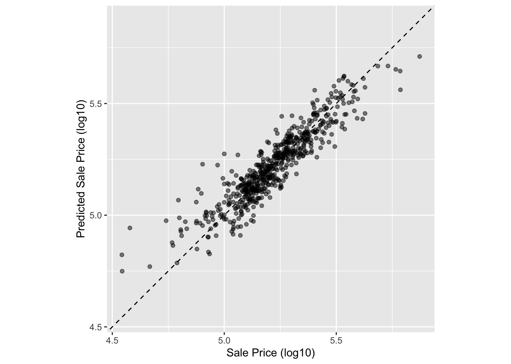
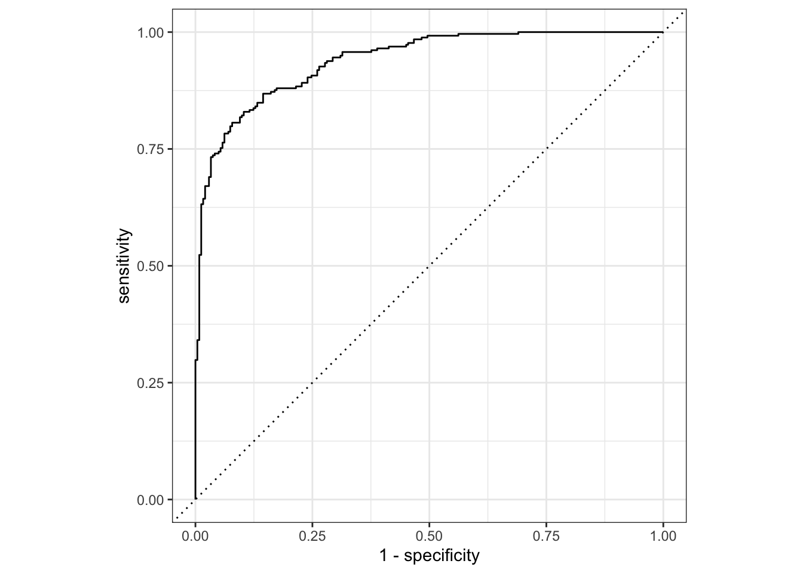

── Conflicts ───────────────────────────────────────── tidymodels_conflicts() ──
✖ purrr::discard() masks scales::discard()
✖ dplyr::filter() masks stats::filter()
✖ dplyr::lag() masks stats::lag()
✖ recipes::step() masks stats::step()
• Dig deeper into tidy modeling with R at https://www.tmwr.org
This chapter is all about evaluating how a model performs. Picking an appropriate metric is important as illustrated by .
An inferential model is used primarily to understand relationships, and typically emphasizes the choice (and validity) of probabilistic distributions and other generative qualities that define the model. For a model used primarily for prediction, by contrast, predictive strength is of primary importance and other concerns about underlying statistical qualities may be less important
Generally, Kuhn and Silge recommend that even if your primary work is developing inferential models, you should still consider predictive strength as a useful model performance metric.
…optimization of statistical characteristics of the model does not imply that the model fits the data well. Even for purely inferential models, some measure of fidelity to the data should accompany the inferential results. Using this, the consumers of the analyses can calibrate their expectations of the results.
Tidymodels recommends model evaluation with the yardstick package.
ggplot(ames_test_res, aes(x = Sale_Price, y = .pred)) +# Create a diagonal line:geom_abline(lty =2) +geom_point(alpha =0.5) +labs(y ="Predicted Sale Price (log10)", x ="Sale Price (log10)") +# Scale and size the x- and y-axis uniformly:coord_obs_pred()

Here’s the RMSE for this prediction:
rmse(ames_test_res, truth = Sale_Price, estimate = .pred)
# A tibble: 1 × 3
.metric .estimator .estimate
<chr> <chr> <dbl>
1 rmse standard 0.0736
In yardstick, you can derive multiple metrics at once with metric_set():
ames_metrics <-metric_set(rmse, rsq, mae)ames_metrics(ames_test_res, truth = Sale_Price, estimate = .pred)
# A tibble: 3 × 3
.metric .estimator .estimate
<chr> <chr> <dbl>
1 rmse standard 0.0736
2 rsq standard 0.836
3 mae standard 0.0549
For binary classification, the case is quite similar:
Recall that the ROC curce describes how a classifier performs in relation to the discrimination threshold (where you cutoff the probabilities). The X axis shows how false positive rate, and the y axis shows the true positive rate. The identity line shows what a standard model generating random guesses would achieve. A really good model will have a large area under the curve (AUC), because it is correctly guessing true positives at a faster rate than it is guessing false positives:
ROC Curve
There’s an autoplot method for the ROC (though I’m not sure why you’d not just plot this yourself; it’s like four lines?)
autoplot(two_class_curve)

two_class_curve %>%ggplot(aes(x=(1-specificity), y = sensitivity)) +geom_line()
 .
.